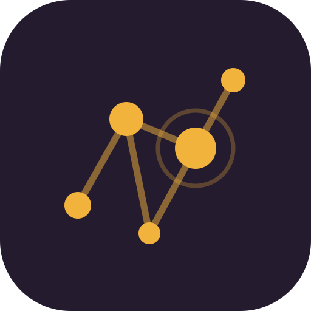
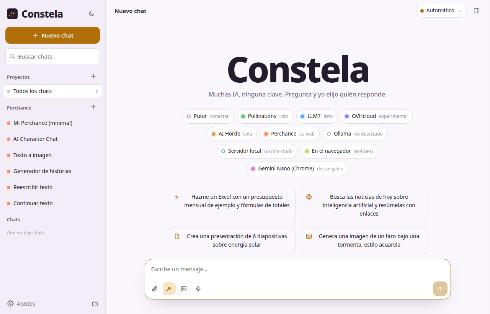
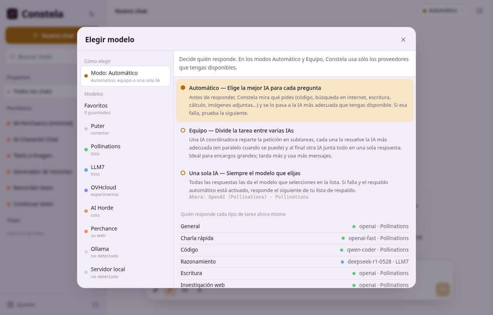
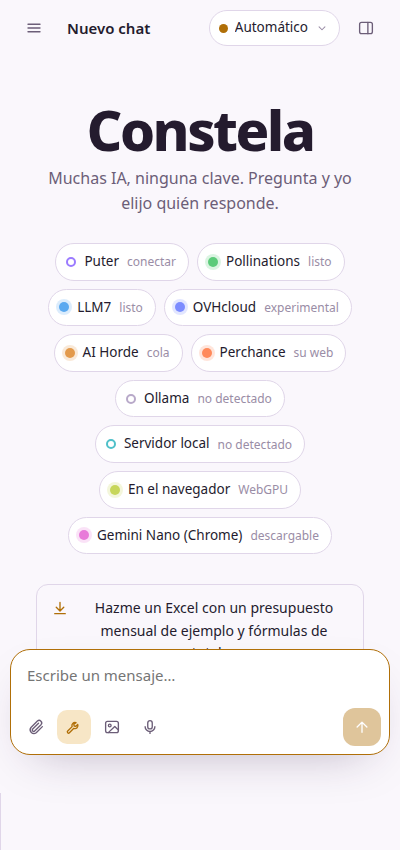

Un solo chat que reúne modelos de inteligencia artificial gratuitos de la nube, de tu PC y de tu navegador. Pregunta y Constela elige qué IA responde — y si una falla, responde la siguiente.
En Windows, SmartScreen puede avisar la primera vez: «Más información» → «Ejecutar de todas formas».
Pensada para usar inteligencia artificial de verdad, sin pagar suscripciones ni pegar claves de API.
Automático: elige la mejor IA para cada pregunta. Equipo: varias IAs se reparten el encargo y juntan una sola respuesta. Una sola IA: siempre el modelo que tú elijas.
Los proveedores funcionan sin API key: Pollinations, LLM7, Puter, AI Horde, Perchance, OVHcloud… y también tus modelos locales con Ollama o en el propio navegador.
Crea documentos Word, PDF, hojas de Excel con fórmulas, presentaciones de PowerPoint, páginas web y código — con vista previa y descarga.
Las IAs pueden dibujar lo que pidas, y hay un modo imagen para crear directamente. También acepta imágenes y archivos adjuntos para analizarlos.
Buscar en la web, leer páginas, Wikipedia, ejecutar JavaScript y Python, calculadora, clima y memoria — las IAs las usan solas cuando las necesitan.
Chats, archivos y ajustes se guardan solo en tu dispositivo, con copia de seguridad exportable. Sin cuentas ni servidores de por medio.
La aplicación real, tal como se ve al abrirla.



🌐 En la web, sin instalar nada. 🪟 En Windows, como programa con su instalador o en versión portable. 🤖 En Android, como aplicación. El mismo código y las mismas funciones en todas — y GitHub compila las tres automáticamente con cada versión.
Todos gratuitos. Si uno llega a su límite o falla, Constela sigue con el siguiente.